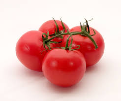
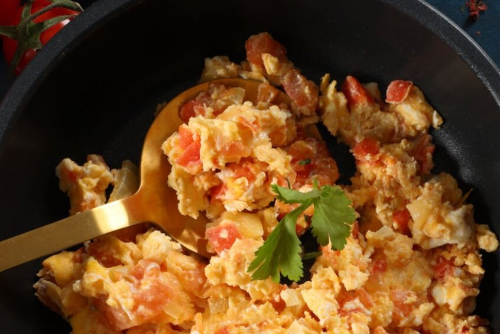

Tomato and scrambled eggs is a staple dish in Chinese home cooking, valued for its balance of sweet and savory flavors, soft texture, and simple preparation. The acidity of ripe tomatoes blends with the richness of scrambled eggs to create a comforting, nutritious meal that is fast to prepare and widely loved.
Move the mouse over the image to see the image swap and click to see animation.
Click the picture to hear the sizzle sound.
